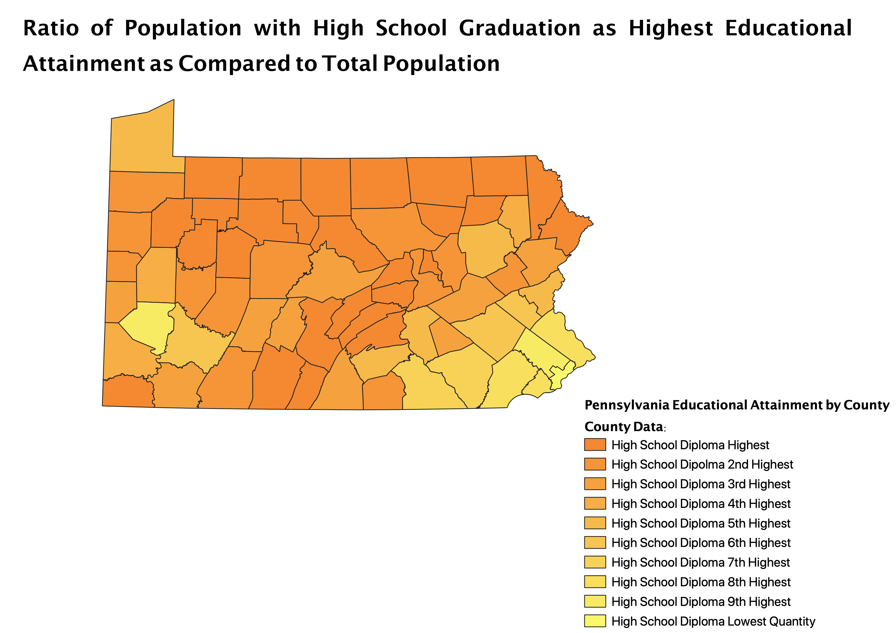
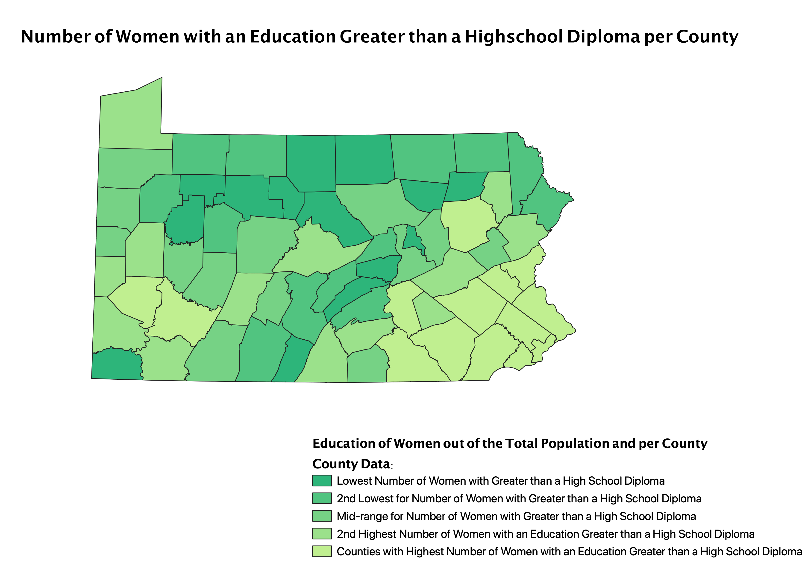
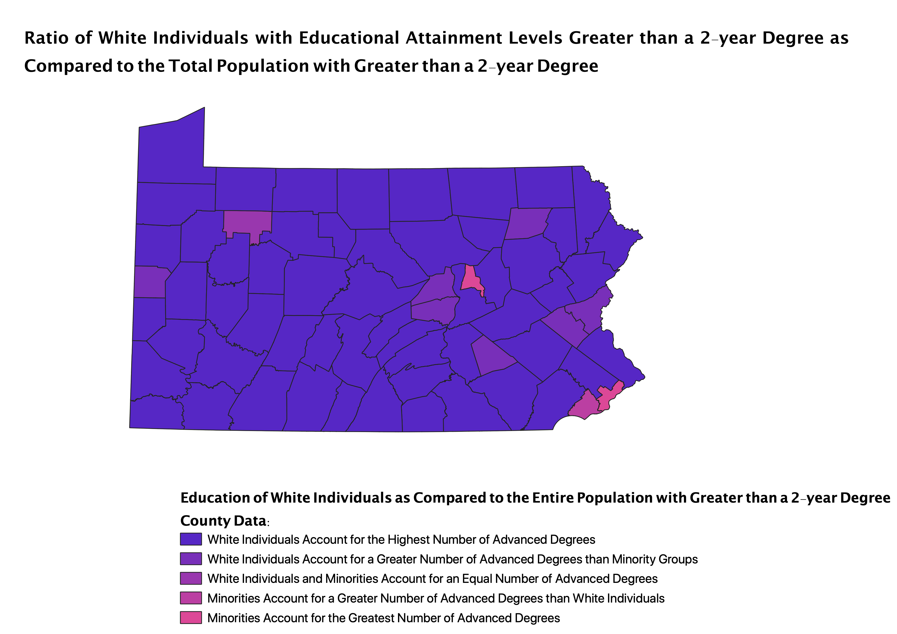

Map1: This map is a ratio of the number of individuals whose Highest Level of Educational Attainment is High School Graduation over the Total Population per County.
This map is graduated with Natural Breaks and 10 Classes.
The pros of this classification are that it shows just how common it is for the highest level of education in a county to be a High School Diploma.
One con of this classification is that while trying to increase the number of classes shown within the gradient it seems to have made the exact level of education less clear (difficult to interpret).
Map2: This map is a ratio of the number of Women whose Highest Level of Educational Attainment is greater than a High School Diploma over the Total Population per County.
This map is graduated with Natural Breaks and has 5 Classes.
One pro of this map classification is that a distinction can be made between the education levels of men and women in Pennsylvania.
A con of this map classification is that there is not much difference between it and the first map.
In counties where the highest level of Educational Attainment is a High School Diploma it is likely that most women in said county have similarly received a High School Diploma and nothing greater.
Map3: This map is a ratio of the number of White Individuals with Educational Attainment greater than a 2-year Degree as compared to the Total Population of Individuals with greater than a 2-year degree.
This map is graduated with Natural Breaks and also has 5 Classes.
A pro of this classification is that some distinction between Educational Levels and Race in Pennsylvania can be made.
One con of this classification is that it is difficult from the map itself to visualize the population numbers of different race and ethnic groups throughout Pennsylvania.
It is also important to keep in mind that socioeconomic information is not included in this data.
